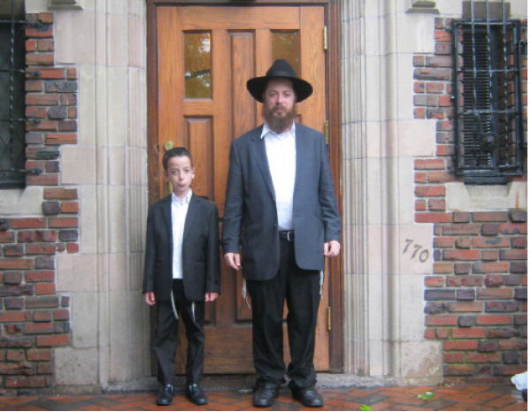

Pure Faith in the Rebbe
“ Even now, as darkness has been covering the world for so many years, when I came and saw that the enthusiasm for the Rebbe was far greater than what I had previously experienced, my spirit was uplifted. The holiness has remained undiminished .”
Translated by Michoel Leib Dobry

During these days of late Elul, as thousands of people pack their suitcases and make their own spiritual preparations for a trip to the Rebbe, I have chosen to go back about three months.
770. The Shabbos before Gimmel Tammuz.
It has been nineteen years since Gimmel Tammuz 5754. The thoughts and reflections leading up to that eventful Shabbos brought me to a very powerful question: How is it possible that those who had never seen the Rebbe – believe in him, cleave to him, and desire nothing more than to be with him as they eagerly wait for his imminent hisgalus?
During my stay in Beis Chayeinu, I looked with great amazement at my ten year-old son, who had come to 770 as the winner of a children’s raffle for Tzivos Hashem members in Eretz HaKodesh. He had been born a few years after that day of darkness, yet he stubbornly declared that he wanted to daven all the t’fillos in “the Rebbe’s minyan.” Why? He has no logical explanations, as this is a feeling from the heart. Rational arguments are nowhere in sight.
This represents the influential power within the realm of holiness. I was only a young boy when I came to the Rebbe for the first time, and I was naturally swept up by the exciting and holy atmosphere. I saw the Rebbe during davening three times a day, went up for dollars, participated in farbrengens, etc. When we saw the Rebbe, everyone wanted to see him again and again, as we forged an inseparable bond with him. These are matters of the soul with no logical or rational basis.
Even now, as darkness has been covering the world for so many years, when I came and saw that the enthusiasm for the Rebbe was far greater than what I had previously known and heard, my spirit was uplifted. The holiness has remained undiminished.
“Lecha Dodi…” The melody seeps into my mind. My son and I grabbed a spot along the eastern side of the farbrengen platform facing the Rebbe’s podium. This was the same place where I stood for davening during my first visit to the Rebbe. It’s hard to describe the feeling… As I was trying to collect my thoughts, an authentic Chassidic tumult took place right in front of me. The group of guests from Brazil, dressed in their elegant suits, began to dance “Lecha Dodi” with great fervor, showing everyone that even the “newcomers” to Lubavitch can connect to the Rebbe with such great enthusiasm. In the days that followed, they brought an atmosphere of tremendous excitement to the Rebbe’s minyanim and the Gimmel Tammuz farbrengen. As is customary among this group, they danced on the tables while passionately singing the words of one single wish: “Yechi Adoneinu.”
* * *
It was a Shabbos meal at the home of one of the Chassidim in Crown Heights. My host spoke openly about the great difficulty of believing in the Rebbe’s hisgalus: “Many years have passed and it won’t become any easier… Moshiach will surely be revealed, but no one knows exactly how.” He said his piece, and I realized that there was no point in arguing with him. After we made a few L’chaims, he repeated what he said earlier. At this point, I decided to try and respond. “Let’s do a little test,” I suggested to him. I asked him to pose the following question to his five year old daughter: “Who is the Moshiach?” The girl responded simply and enthusiastically, “The Rebbe!” The stunned father then asked her, “So where is he?” The daughter replied with absolute certainty: “Here.” I then suggested to my host that we ask the same question to his son who learns in yeshiva. The bachur didn’t understand the question, as he replied unwaveringly that the Rebbe is Moshiach and he is here with us. His older daughters responded in a similar manner.
In fact, these young people express their pure faith perhaps better than we ever have. They know who the Moshiach is, and they also know where to find him.
* * *
It was Shabbos afternoon in 770. The farbrengen began at half past one and continued until Mincha. At one point, I sat at a table where a group of T’mimim was farbrenging with their friends who had just celebrated their aufruf during the Torah reading in preparation for their upcoming weddings. “L’chaim…L’chaim…” One of the T’mimim burst into song, and everyone soon joined them.
As the T’mimim began to sing another niggun, I recalled the years when I was a yeshiva bachur. The Rebbe would give over sicha after sicha about mivtzaim, spreading the wellsprings of Chassidus, going on shlichus, Moshiach and the Redemption. We would listen to weekday sichos via live hook-up, and get the sichos from Shabbos early the next week – first in synopsis form, and eventually fully edited. Naturally, the T’mimim would immediately set out to fulfill the Rebbe’s instructions. Thinking about shlichus and carrying out the longstanding (and brand new) orders of the Nasi were an integral part of a Tamim’s daily routine…
* * *
It’s the night of Gimmel Tammuz. An evening of unity. The driving rain that had fallen in recent days forced the organizers to bring all the participants into Beis Chayeinu, instead of blocking the main thoroughfare. 770 was filled to capacity, as several thousand Chassidim came to this event, while many more waited outside. Everyone together saw film clips of the Rebbe demanding unity and the hisgalus of Moshiach, followed by clips of him encouraging the singing of “Yechi.” People from across the Chabad spectrum sat together in an aura of tremendous unity, as they saw and heard the Rebbe’s holy words. A moment of true achdus, without speeches, without a head table – just the Rebbe.
And who organized this event? “American bachurim.” These were the young students of the yeshiva g’dola – “Oholei Torah” in Crown Heights. While they had all been born after Gimmel Tammuz, they were the ones who came united with great enthusiasm to organize this holy event.
As I mentioned before, there wasn’t and there won’t be any logical explanation. This was all from the power of the Rebbe, who continues to instill strength within us beyond all nature, along with a true desire for hiskashrus to the leader of our generation. Fortunate are we to be Chassidim of the Rebbe, Melech HaMoshiach.
* * *
Now, three months after this emotional visit, there’s a bit of an uproar in our home as we prepare for the month of Tishrei. I am planning on making the trip with my ten-year-old son, who had previously won a raffle and had been the first child in the family to travel to the Rebbe. In effect, he already won – literally and figuratively. The aura of holiness surrounds him, and it exhorts him to ask me if he could come for Tishrei as well. However, now my older daughter presents her case. She argues that she’s old enough and she too wants to go to the Rebbe.
The Rebbe draws them ever closer…
Berger. "Pure Faith in the Rebbe." Beis Moshiach, no. 894 (August 27, 2013).